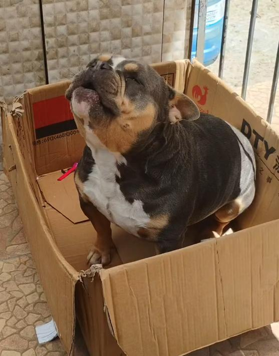
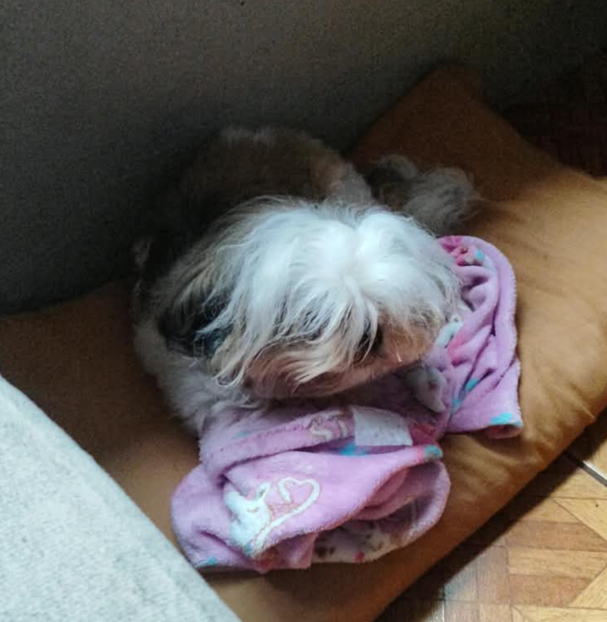
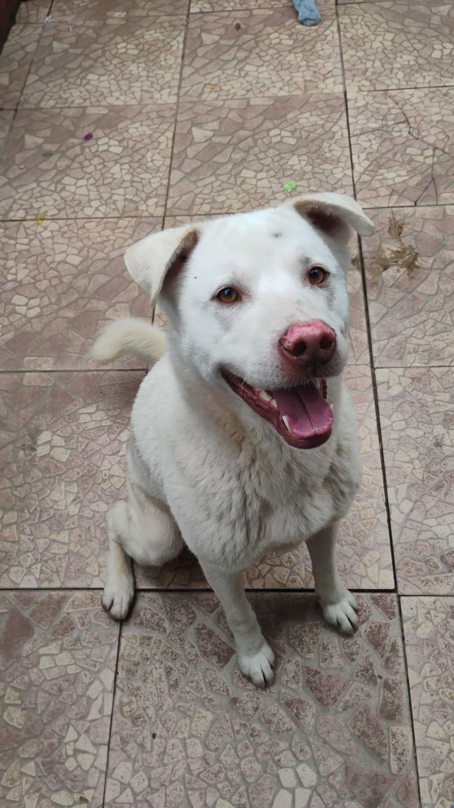

PROCURA-SE

Amélia
- Raça e porte
- American Bully, médio
- Cor
- Cinza e branco
- Onde
- Jardim Itu — Porto Alegre
- Data
- 12/10/2026
- Observação
- Ela não anda muito, não deve ter ido longe.
Mural comunitário
Cada cartaz reúne foto, bairro e contato para a vizinhança espalhar.
Fotos, nomes, bairros e telefones são ilustrativos. Os animais são todos dos desenvolvedores. Nenhum animal sofreu maus tratos.


